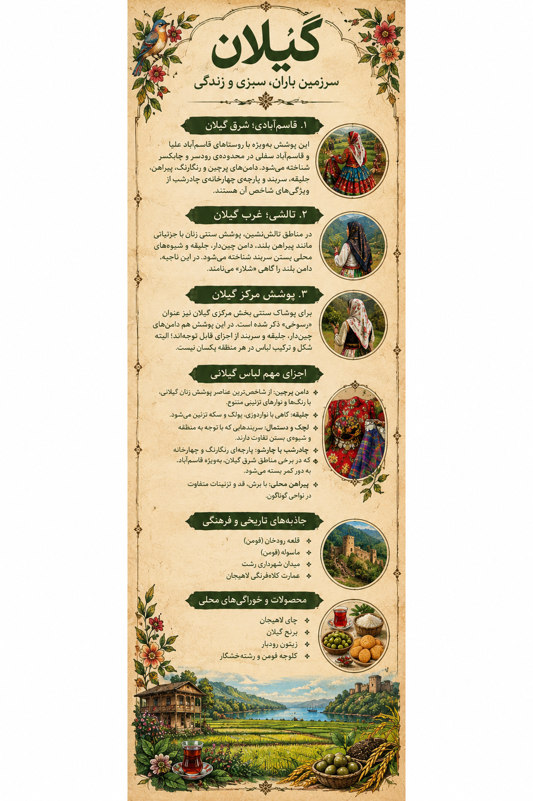

پوشش قاسمآبادی
در شرق گیلان، بهویژه قاسمآباد، دامنهای پرچین و رنگارنگ و سربندهای محلی از ویژگیهای شناختهشده پوشش زنان هستند.
مجموعه تصویری ایران، هزار رنگ
رنگ زندگی در لباس زنان گیلان
روایت تصویری پوشش زنان ایران

روایت تصویری پوشش زنان گیلان، در پیوند با طبیعت، زندگی و فرهنگ محلی
پوشش سنتی زنان گیلان با دامنهای چیندار و رنگارنگ، روسریها و سربندهای محلی و پارچههای گلدار شناخته میشود. شکل لباس و ترکیب رنگها در نواحی مختلف استان یکسان نیست و هر منطقه ویژگیهای خود را دارد.

لیبل اطلاعاتی پوشش زنان گیلان؛ معرفی اجزای لباس و تفاوتهای منطقهای
در شرق گیلان، بهویژه قاسمآباد، دامنهای پرچین و رنگارنگ و سربندهای محلی از ویژگیهای شناختهشده پوشش زنان هستند.
در نواحی تالش، پوشش سنتی با شیوه زندگی کوهستانی و روستایی پیوند دارد و در جزئیات لباس تفاوتهای محلی دیده میشود.
در بخشهای مختلف گیلان، رنگ پارچه، طرح گلها، نوع روسری و شیوه بستن آن میتواند تفاوت داشته باشد.
چادرشببافی از هنرهای شناختهشده قاسمآباد است؛ پارچهای دستباف با طرحها و رنگهای متنوع که بخشی از میراث نساجی منطقه به شمار میرود.
توجه: پوشش سنتی در هر منطقه و دوره تاریخی تنوع داشته است؛ این معرفی، تصویری کلی از برخی ویژگیهای شناختهشده آن ارائه میکند.
منطقهای شناختهشده برای پوشش رنگارنگ زنان و هنر چادرشببافی.
سرزمینی با فرهنگ محلی متنوع، طبیعت کوهستانی و سنتهای روستایی.
بافت پلکانی، معماری بومی و پیوند زندگی روزمره با شیب کوهستان.
شهری پیوندخورده با کشت چای، باغها و چشماندازهای سرسبز.
روستایی تاریخی با معماری پلکانی و خانههایی که بام هر خانه، حیاط خانه بالاتر است.
دژی تاریخی در دل جنگلهای سرسبز فومن که با مسیر جنگلی و برجوباروی سنگی شناخته میشود.
از فضاهای شاخص شهری رشت با بناهای تاریخی و جایگاهی مهم در زندگی اجتماعی شهر.
بخشی از هویت تاریخی شهر که با باغهای چای، چشماندازهای سبز و بناهای قدیمی پیوند دارد.
غذایی با بادمجان کبابی، سیر، گوجهفرنگی و تخممرغ.
خوراک محلی با باقلا، شوید و سیر که معمولاً با برنج سرو میشود.
خوراکی ترشمزه با سبزیهای محلی و چاشنیهای گوناگون.
خورشی محلی با گردو، سبزی و طعمی ترش و متمایز.
کبابی با چاشنیهای ترش محلی، معمولاً با گردو و سبزیهای معطر.
شیرینی سنتی تهیهشده از رشتههای نازک خمیری و مغز گردو و ادویه.
شیرینی مشهور فومن با لایهای از خمیر و مغزی معطر.
چاشنی محلی با بادمجان کبابی، گردو و سبزیهای معطر.
انواع شیرینی و حلوا در شهرها و روستاهای گیلان با دستورهای بومی تهیه میشوند.
چای از محصولات شناختهشده گیلان و بخشی از چشمانداز باغهای منطقه است.
کشت برنج در شالیزارهای پربار، بخشی مهم از اقتصاد و فرهنگ غذایی استان است.
رودبار به باغهای زیتون و فرآوردههای گوناگون آن شهرت دارد.
عسل و محصولات بومی دیگر نیز بخشی از تنوع تولید و سوغات منطقه را تشکیل میدهند.
برای آشنایی بیشتر با پوشش، صنایعدستی و فرهنگ غذایی گیلان، میتوانید منابع زیر را بررسی کنید:
این صفحه بخشی از یک پروژه هنری و فرهنگی است. اطلاعات پوشش و سنتهای محلی ممکن است بر اساس منطقه، نسل و منابع تاریخی تفاوت داشته باشد.